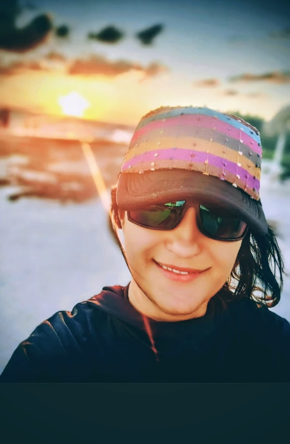
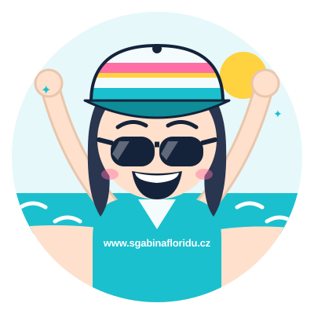
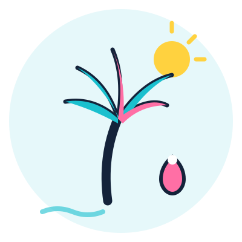
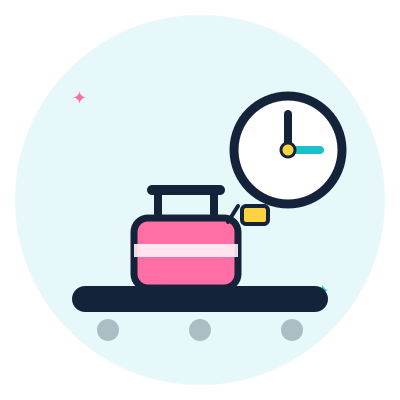
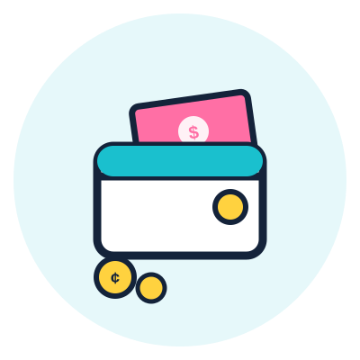
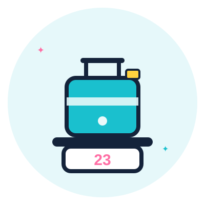
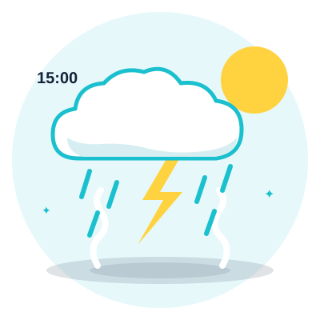
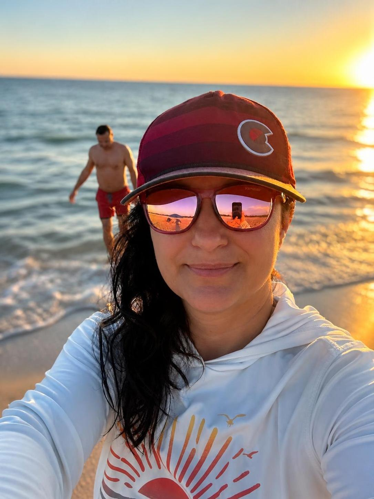

Třicet otevřených záložek. A pořád nevíš, kde začít.
Žádný chaos. Zadáš datum odletu a appka tě povede přesně tam, kde teď jsi, krok za krokem, jen to, co řešit právě teď.

Svíral se mi žaludek. Neznámá dálka, cizí jazyk, cizí systém. Ale tehdy bylo paradoxně jedno plus navíc: prostě jsem musela věřit, že to dopadne dobře, protože jiná možnost nebyla.
Uběhlo třicet let. A víš, co se změnilo?
Nic.
(Tedy kromě toho, že dneska u toho zmatkování máme vysokorychlostní internet. A třicet záložek místo jedné.)
Přesně tenhle stav teď žije moje kamarádka Hanka. Chystá se do Ameriky poprvé na vlastní pěst. Sedí po nocích u počítače. Fóra, blogy. A čím víc toho přečte, tím míň má jasno. Protože každý píše něco trochu jiného a nikdo jí neřekne, co platí pro ni a její termín.
Tenhle zmatek znám z obou stran. A přesně proto jsem tu appku udělala.
Chci, aby se Hanka, a všichni ostatní, co poprvé vyrážejí na vlastní pěst, místo večerního stresování fakt těšili.

Mezitím čti dál, appka nezahálí.
Věci se dějí. I těm, co mají všechno srovnané.
Bojíš se, že ti u kontroly někdo promluví rychleji, než stihneš v hlavě přeložit? Stává se to i lidem, co anglicky umí líp, než si myslíš.
A kolik si vzít peněz, ať to stačí a nic nepřeplatíš? To taky nemusí být hádanka.
Co třeba dělat, když máš dvě hodiny na přestup a na imigračním je fronta jak za socíků na toaletní papír. A ty víš, že se v Americe nesmí předbíhat.
Tohle se nedozvíš z žádného blogu. A cestovka ti to taky neřekne, protože ona prodává sny, ne realitu.
Do Česka můžeš dovézt kde co, ale do USA je to jinak. Své by o tom mohl vyprávět kamarád Michal, který vezl z Kolumbie do Denveru šunkovou kýtu. Pokuta byla astronomická. A o kýtu přišel taky.
Co dalšího se nesmí vozit, a co naopak smí, i když by tě to nenapadlo, to máš v průvodci celé pohromadě.

Zjistíš, která destinace sedí tobě... ne cestovce, ne Instagramu. A ve kterém období tam jet, aby tě Amerika nepřekvapila víc, než obvykle překvapí.
Appka zkontroluje platnost pasu za tebe i za každého, kdo letí s tebou. ESTA vyřídíš na správném místě, ne na podvodném webu, který vypadá skoro stejně.

Víš přesně, kdy nakupovat, kde hledat a proč je délka přestupu důležitější než cena letenky. Zkrácený přestup v Americe se chová jinak než v Evropě, a to se ti může pořádně prodražit.
Žádné překvapení na recepci. Víš dopředu o resort fee, blokaci na kartě i o tom, proč čtyři hvězdičky v Americe neznamenají to samé co doma.

Přesně víš, kolik hotovosti vzít, jak funguje spropitné a kolik si ukousne banka ještě předtím, než z účtu zmizí první tisícovka.

Co sbalit, co vytisknout, co do Ameriky nesmí. Nic nezapomeneš, protože appka tě hlídá podle tvého data odletu.

Zrušený let, ztracený pas, zamítnutá ESTA. Pro každou situaci klidný postup místo paniky. Protože věci se dějí, i těm, co mají všechno srovnané.
A k tomu navíc dostaneš 4 věci, které v žádném jiném průvodci nenajdeš.
Offline schránka na ESTU, letenky a rezervace. Funguje i bez signálu, i na letišti, kde data nestačí.
Přehledný plán cesty, který si upravíš podle svého data odletu a destinace.
Přesně vidíš, kolik celý výlet stojí. Bez překvapení na konci.
Měny a jednotky, Fahrenheit, galony, míle, dolary. Všechno na jednom místě, bez googlu, a rovnou i kalkulačka spropitného.

Jsem Gábi. Napůl žiju na Floridě, napůl v Česku. Manžel je v Americe už 27 let. Já lítám tam a zpět tak dlouho, že bych o tom mohla udělat reportáž, ale raději jsem teda udělala appku.
Spala jsem na letišti ve Washingtonu, když mi uletělo letadlo do Denveru. Zažila jsem povinnou evakuaci před hurikánem. Měla jsem průšvih na celnici kvůli koření. A pořád poslouchám historky přátel v USA o tom, co jim na celnici neprošlo. Průvodce jsem nepsala od stolu. Psala jsem ho z míst, kde se tohle všechno opravdu děje.
Nejsem cestovka. Jsem ta, co ti řekne, co bych chtěla slyšet já, kdybych letěla poprvé do Ameriky a nevěděla, kde začít.
Všech 7 modulů, Trezor, kalkulačky, checklisty, videa. Kompletní příprava od prvního rozhodnutí až po krizový plán.
Chci být mezi prvními deseti →Ceny jsou s DPH. Přístup dostaneš okamžitě po zaplacení.
Ano. Appka hlídá doklady a termíny pro každého, kdo jede s tebou, ne jen pro tebe samotnou. Cena je za appku, ne za jednoho člověka.
Appka běží přímo v prohlížeči. Nic se neinstaluje, nic se nestahuje. Otevřeš odkaz a appka je tam, stejně jako webová stránka.
Datum si kdykoliv upravíš a appka přepočítá celý plán znovu.
Ano, appka i Trezor fungují offline. Signál potřebuješ jen při úplně prvním otevření.
Pro soft launch prodávám jen Celý průvodce za zvýhodněnou cenu. Varianta jen s moduly 1 až 4 bude dostupná od veřejného launche 15. září.
Třicet záložek otevřených. A moje kámoška Hanka pořád neví, kde začít.
Ty už víš.
Jedna appka. Někdo, kdo tím prošel. A klid, který přijde ne z přípravy doma, ale z toho, co máš u sebe na letišti.